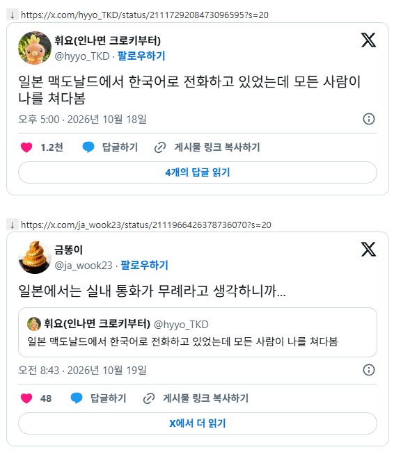

질본은 실내 흡연은 괜찮고 실내 전화는 안되는거?????
큰소리로 통화하는거 말고 그냥 실내서 통화하는거 자체가 무례인거임?? 신기

질본은 실내 흡연은 괜찮고 실내 전화는 안되는거?????
큰소리로 통화하는거 말고 그냥 실내서 통화하는거 자체가 무례인거임?? 신기
카페도 아니고 맥날은 평범하게 전화 받을텐데
어지간히 목소리가 컸나본데 한국어라서 어색하게 들리는것도 있고
개인적으로 카페나 음식점에서 서로 소통가능할 정도의 소리로 크지않게 대화하는거에 반감은 없는데,
개같이 큰 소리 만드는 개좆같은 병신년놈과 애새끼들이 있어
일본에서 대학교 나오고 회사다녔음 기본적으로 카페 식당에서 통화하는걸 다른사람 피해준다고 생각하고 일단 나가서 받는 나라다 물론 쌩까고 지 하고싶은대로 하는 사람은 있다 일단 놀러갔으면 이해가 안되도 그 나라가면 그나라의 매너나 법을 조금이라도 배우고 따르는게 맞지 백인들이 우리나라 예의법도 이해못하는거랑 차이가 없는거고 중국인들이 우리나라와서 무단횡단하고 길거리에 똥싸는것도 이해못하는거랑 같지